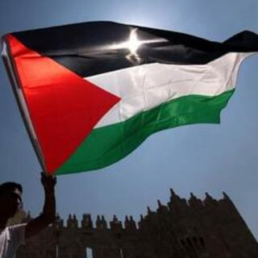

Guerra civil yemení
La guerra civil yemení es un enfrentamiento armado que está atravesando la República de Yemen como consecuencia del golpe de Estado sufrido en 2014 contra el presidente Al-Hadi. Dos partes enfrentadas y radicalizadas se disputan el Gobierno yemení. Los separatistas del sur y las fuerzas leales al gobierno de Al-Hadi, con sede en Aden, entraron en conflicto con los guerreros hutíes, y fuerzas leales al expresidente Salé. La organización al-Qaeda en la Península arábiga y el Estado Islámico de Irak y el Levante también han participado en el conflicto, llegando la AQPA a controlar algunos territorios en el interior y trechos de la costa.
En este contexto, hay en curso una intervención militar extranjera —Operación Tormenta Decisiva— que comenzó cuando la coalición de Estados árabes, liderada por Arabia Saudí, emprendió una campaña aérea y terrestre en territorio de su vecino Yemen, el 25 de marzo de 2015, para intentar repeler a las fuerzas hutíes, presuntamente respaldadas y armadas por Irán. Pese a los ataques de la coalición, la mayor parte de las víctimas resultan ser población civil.
El 18 de agosto, Amnistía Internacional (AI) denunció que se cometían crímenes de guerra contra la población civil de Yemen, incluyendo a las fuerzas leales a Abd Rabbuh Mansur al-Hadi en el grupo de los responsables de los mismos. Para sustentar su informe, AI presentó evidencias de ocho ataques aéreos que mataron a 141 civiles y dejaron heridos a 101. Ambas partes utilizan como armas cohetes de granizo, mortero y artillería, consideradas imprecisas y que no permiten discriminar objetivos en zonas altamente pobladas. Por ello, AI reclamó al Comité de Derechos Humanos de la ONU la creación de una comisión independiente para investigar estos supuestos crímenes.
Un informe difundido por la Comisión Europea en diciembre de 2018 estiman en 60.000 las víctimas mortales del conflicto, frente a los 10.000 que mantiene la ONU en sus registros desde 2016.

|  Conflicto Palestina-Israel |
 Guerra Irán-Irak |
 Invasión de Afganistán |
 Guerra civil siria |